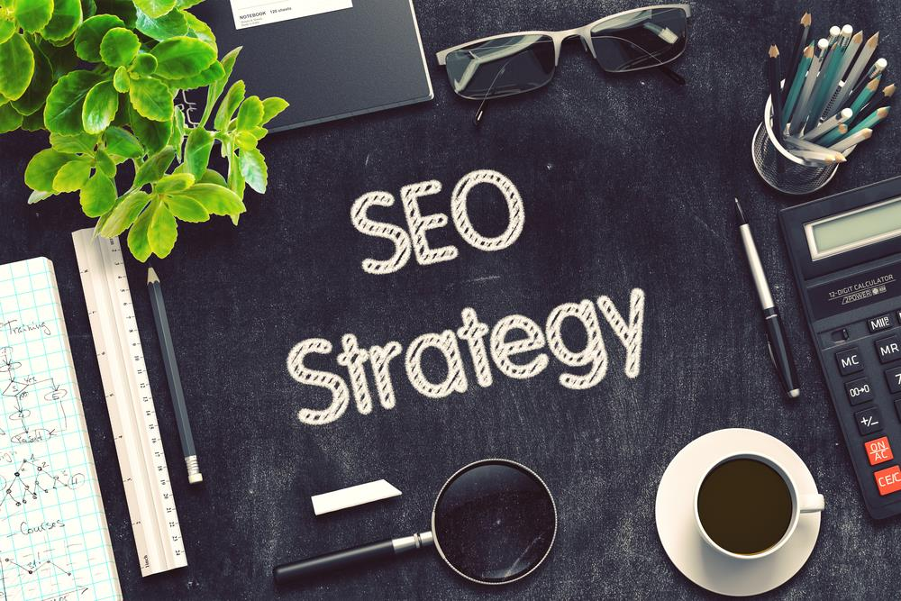

<!DOCTYPE html PUBLIC "-//W3C//DTD XHTML 1.0 Transitional//EN" "http://www.w3.org/TR/xhtml1/DTD/xhtml1-transitional.dtd"><html xmlns="http://www.w3.org/1999/xhtml"><head><meta http-equiv="content-type" content="text/html;charset=UTF-8">

<meta charset="UTF-8">
<meta http-equiv="Content-Type" content="text/html; charset=utf-8">
<meta http-equiv="X-UA-Compatible" content="IE=edge,chrome=1">
<meta name="viewport" content="width=device-width, initial-scale=1.0, maximum-scale=1.0, user-scalable=no">
<meta name="google-site-verification" content="MaU7baWWrEjrqG8OsqSctQTtkQ6ujhstreyK1d5gXkc">
<meta name="ahrefs-site-verification" content="12087e3ea5805ca83cac9aab62259e4f861670b2e94b42db700de7744028f4d4">
<meta name="yandex-verification" content="55a21d82a563a57b">
<meta name="twitter:card" value="summary">
<meta property="og:locale" content="en_US">
<meta property="og:title" content="Webzool | Winning Digital Solutions">
<meta property="og:description" content="Webzool is the #1 SEO company in Los Angeles.We have been providing SEO services for Los Angeles companies.">
<meta property="og:type" content="website">
<meta property="og:url" content="https://www.webzool.io/">
<meta property="og:site_name" content="Webzool Digital Agency">
<meta property="og:image" content="../static/images/og-image-01.png">
<title>The Best SEO Strategy You Need in 2019</title>
<meta name="description" content="Downloads are usually ignored in SEO strategy. Many specialists pay much attention to posts and images, but they do not benefit from newer SEO trends like downloads.">
<link rel="icon" type="image/png" href="../static/images/favicon.ico">
<link rel="stylesheet" href="../../stackpath.bootstrapcdn.com/bootstrap/4.1.3/css/bootstrap.min.css" crossorigin="anonymous">
<link rel="stylesheet" type="text/css" href="../static/css/slick.css">
<link rel="stylesheet" type="text/css" href="../static/css/slick-theme.css">
<link rel="stylesheet" type="text/css" href="../static/css/main.css" media="all">

<script src="../../www.googletagmanager.com/gtag/js" type="2b22c84cbfb0cfff96aa247e-text/javascript"></script>

<script type="2b22c84cbfb0cfff96aa247e-text/javascript">
		! function (f, b, e, v, n, t, s) {
			if (f.fbq) return;
			n = f.fbq = function () {
				n.callMethod ?
					n.callMethod.apply(n, arguments) : n.queue.push(arguments)
			};
			if (!f._fbq) f._fbq = n;
			n.push = n;
			n.loaded = !0;
			n.version = '2.0';
			n.queue = [];
			t = b.createElement(e);
			t.async = !0;
			t.src = v;
			s = b.getElementsByTagName(e)[0];
			s.parentNode.insertBefore(t, s)
		}(window, document, 'script',
			'https://connect.facebook.net/en_US/fbevents.js');
		fbq('init', '410331106460614');
		fbq('track', 'PageView');
	</script>
<noscript></noscript>


<script src="../../www.googletagmanager.com/gtag/js" type="2b22c84cbfb0cfff96aa247e-text/javascript"></script>
<script type="2b22c84cbfb0cfff96aa247e-text/javascript">
		window.dataLayer = window.dataLayer || [];

		function gtag() {
			dataLayer.push(arguments);
		}
		gtag('js', new Date());

		gtag('config', 'UA-143891312-1');
	</script>

<script type="2b22c84cbfb0cfff96aa247e-text/javascript">
		(function (m, e, t, r, i, k, a) {
			m[i] = m[i] || function () {
				(m[i].a = m[i].a || []).push(arguments)
			};
			m[i].l = 1 * new Date();
			k = e.createElement(t), a = e.getElementsByTagName(t)[0], k.async = 1, k.src = r, a.parentNode.insertBefore(k,
				a)
		})
		(window, document, "script", "https://mc.yandex.ru/metrika/tag.js", "ym");

		ym(54457120, "init", {
			clickmap: true,
			trackLinks: true,
			accurateTrackBounce: true,
			webvisor: true
		});
	</script>
<noscript>
		<div></div>
	</noscript>


<script type="2b22c84cbfb0cfff96aa247e-text/javascript">
		(function (w, d, s, l, i) {
			w[l] = w[l] || [];
			w[l].push({
				'gtm.start': new Date().getTime(),
				event: 'gtm.js'
			});
			var f = d.getElementsByTagName(s)[0],
				j = d.createElement(s),
				dl = l != 'dataLayer' ? '&l=' + l : '';
			j.async = true;
			j.src =
				'https://www.googletagmanager.com/gtm.js?id=' + i + dl;
			f.parentNode.insertBefore(j, f);
		})(window, document, 'script', 'dataLayer', 'GTM-KPDC95D');
	</script>


<noscript><iframe src="https://www.googletagmanager.com/ns.html?id=GTM-KPDC95D" height="0" width="0" style="display:none;visibility:hidden"></iframe></noscript>

<script type="2b22c84cbfb0cfff96aa247e-text/javascript">
		gtag('config', 'AW-722911980/maqcCM7nmqgBEOyF29gC', {
			'phone_conversion_number': '(855)-681-0959'
		});
	</script>
</head>
<body>
<nav class="navbar navbar-expand-lg navbar-dark bg-tr" id="navbar">
<a class="navbar-brand" href="../index.html">
<span></span>

</a>
<button class="navbar-toggler collapsed" type="button" data-toggle="collapse" data-target="#navbarNav" aria-controls="navbarNav" aria-expanded="false" aria-label="Toggle navigation">
<span class="navbar-toggler-icon"></span>
</button>
<div class="collapse navbar-collapse" id="navbarNav">
<ul class="navbar-nav ml-auto">
<li class="nav-item">
<a class="nav-link" href="../index.html">Home</a>
</li>
<li class="nav-item dropdown">
<a class="nav-link" href="../index.html" id="navbarDropdown" role="button" data-toggle="dropdown" aria-haspopup="true" aria-expanded="false">
Services
</a>
<div class="dropdown-menu" aria-labelledby="navbarDropdown">
<a class="dropdown-item web" href="../web-design/index.html">Web Design & Development<span class="sub">Responsive Web Design Solutions</span></a>
<a class="dropdown-item digital" href="../seo/index.html">Search Engine Optimization<span class="sub">Enjoy the view from the top of the google search results.</span></a>
<a class="dropdown-item brand" href="../branding/index.html">Branding Identity & Graphic Design<span class="sub">Logo and Social Media Design</span></a>
<a class="dropdown-item pr" href="../pr/index.html">PR Services<span class="sub">Promotion Services</span></a>

</div>
</li>
<li class="nav-item">
<a class="nav-link" href="../about/index.html">About Us</a>
</li>
<li class="nav-item">
<a class="nav-link" href="../portfolio/index.html">Portfolio</a>
</li>

<li class="nav-item">
<a class="nav-link" href="../glossary/index.html">Glossary</a>
</li>
<li class="nav-item">
<a class="nav-link" href="../blogs/index.html">Blog</a>
</li>
<li class="nav-item">
<a class="nav-link" href="../contact/index.html">Contact Us</a>
</li>
</ul>
</div>
</nav>
<section class="blog-detail">
<div class="container">
<div class="row">
<div class="col-sm-12">
<div class="meta-box">
<div class="featured-image-box" style="background-image: url('/media/posts/2019/09/19/seo_strategy.svg');">
</div>
<h1>The Best SEO Strategy You Need in 2019</h1>
<p class="blog-short">Downloads are usually ignored in SEO strategy. Many specialists pay much attention to posts and images, but they do not benefit from newer SEO trends like downloads. These contents may include PDFs, Word files, Checklists, e-books, etc.</p>
<p><span class="blog-author-and-date"><i>Samira Valiyeva</i></span></p>
<p><span>Sep.01,2019</span> Viewed <span></span></p>
<div class="sharethis-inline-share-buttons"></div>
</div>
</div>
</div>
</div>
</section>
<section class="blog-content">
<div class="container-fluid">
<div class="row">
<div class="col-md-3">
<div class="left-sidebar">
<div class="table-of-contents"></div>

</div>
</div>
<div class="col-md-6">
<div class="insidePage">
<article>
<div class="all-questions">
<p>The requirements of Search Engine Optimization change frequently. What made you win last year can hurt your rankings now. The rules of the game constantly change. The worst part is that you do not even know that they have changed. Therefore, you should stay aware of new trends and develop an up-to-date <em>SEO strategy</em>. However, the process is not always straightforward. You need to research and experiment with fresh ideas. In this post, I am going to share with you some SEO tips. The effectiveness of these tips are proven and they benefit every website owner. Hence, I decided to inform you about them. Ignoring these simple and effective steps will keep you several steps behind the competitors.†</p>
<h2>Elements of Best SEO Strategy</h2>
<p>Any professional SEO company knows that the optimization process has extensive steps. All those stages, including content creation, keyword or link inserting, require a high level of effort. ƒ∞f executed successfully, <em>SEO strategy</em> will be the key to earning long-term profits and increasing your <a href="../conversion-rate-for-landing-page/index.html" target="_blank">conversion rates</a>. My advice is that let an experienced specialist do all the required work. It will ensure that your strategy is actually working. I know you might be restrained by the budget limitations. Therefore, keep in mind that in Webzool Creative, we offer to conduct all below-mentioned steps at a reasonable price.†</p>
<h3>Role of Content Creation in SEO Strategy</h3>
<p></p>
<p>Now it is time to discuss the elements for optimization. Believe it or not, an essential part of any SEO strategy is content. High-Quality Content is the magic wand that brings you to the top search results. It attracts readers, makes them continue reading, and even share. Although the process has vast benefits, impeccable material is hard to craft. It requires a lot of attention and creativity. <a href="../10-tips-for-best-seo-content-creation-in-2019/index.html" target="_blank">Content creation</a> serves two completely different purposes. On the one hand, you need to get the attention of readers. Hence, the material should be engaging. The post should flow naturally from topic to topic, involve empathy, and lots of recommendations.†</p>
<p>On the other hand, you need to add links and keywords for making your content visible to the algorithms of search engines. Inserting backlinks and sprinkling keywords in fixed amounts can affect engaging content negatively. The reason is that material with full of links can seem robotic. Therefore, those efforts can be a barrier to user engagement. While you try to make the content attractive to the algorithm, you lose the attention of the customer. Hence, content writing is all about keeping the harmony and balance between the readers engagement and the requirements of search engines.</p>
<h3>Types of Contents</h3>
<p>As said before, content is an integral part of <a href="https://www.searchenginejournal.com/seo-for-news-websites/270065/index.html" target="_blank">Search Engine Optimization</a>. There exist different types of materials, including posts, images, videos, downloads, etc. All of them have different challenges and benefits. In this section, I will focus on three of them and give you tips. Please, also keep in mind that you should use alt descriptions in multimedia. Google algorithm can not actually see the multimedia. Hence, writing alt descriptions is essential for making your content visible to Google.</p>
<h4>Blogs</h4>
<p>It is very useful to have a blog section on your website. You can create blogs on any related topics. New trends in your industry, recommendations to visitors, or description of specific issues can act as a magnet for organic <a href="../get-juicy-SEO-traffic-gaming-site/index.html" target="_blank">SEO traffic</a>. The blog section aims two goals. Firstly, it attracts readers with regular fresh topics. Secondly, it signals the algorithm that you create high-quality content, and you care for your visitors. If you get the help of an SEO agency, they usually involve content writers who craft blogs.†</p>
<p>To make it more attractive, you can add images, videos, infographics, tables, or checklists to your texts. These elements will make your material look catchier. Besides, they can also aid description. For example, if you explain the benefits of SEO strategy, you can add a short video. It will make the content more engaging. Besides, the algorithm also gives priority to the materials with videos or images. So, the advantages of having blogs are vast for your business.†</p>
<h5>How to Achieve Balance in Blog Writing?</h5>
<p>Though it is challenging to keep balance, it is not impossible. There are a few steps that you need to follow to craft high-quality, engaging content. Any reliable SEO company will advise you to prioritize creativity over the requirements of the algorithm. Take the topic and start writing. Do not think about keywords or links. Your main aim should be creating a naturally flowing, creative, and impeccable material. After you finalize the content, you will notice how your keywords already appear in the text. Alternatively, you can add keywords and links wherever possible.</p>
<p>The reason for prioritizing creativity is that your most important target is the audience. When people like your material, they keep reading. If they do not, they will leave the page. As a result, your bounce rate will increase. The <a href="https://en.wikipedia.org/wiki/Bounce_rate/index.html" target="_blank">bounce rate</a> affects your rankings negatively. So, even if you obeyed all the requirements of the algorithm, you will still rank low. Therefore, engaging your readers is more effective. Do your best to craft high-quality material tailored to the needs of visitors.†</p>
<h4>Images</h4>
<p></p>
<p>When we read a long article, we feel excited when pictures appear in the following pages. This principle works similar to SEO, too. It is necessary to add images to your post to make it more engaging. One type of image can be infographics. Infographics visualize quantitative data or a challenging process in a simple way. Your readers will love a carefully designed image. They even tend to assist <a href="../social-media-marketing-2019/index.html" target="_blank">Social Media Marketing</a> by sharing if you include a detailed infographic.†</p>
<p>The only downside of pictures is that they can reduce the load speed of your website. Hence, you need to optimize them. There are several ways for that. You can compress the picture or resize it. Another way is cropping the image and eliminating unnecessary details. Cropping is always good for mobile-friendly pages. With small screens, it is difficult to see the pictures clearly. Hence, if you crop the image, readers will comfortably enjoy your content.</p>
<h4>Downloads</h4>
<p>Downloads are usually ignored in <a href="../6-essential-seo-strategies-focusing/index.html" target="_blank">SEO strategy</a>. Many specialists pay much attention to posts and images, but they do not benefit from newer SEO trends like downloads. These contents may include PDFs, Word files, Checklists, e-books, etc. When you offer a download, you can ask people to answer several questions. These questions can include their name, position, and contact details like email or phone. As a result, you can build a robust customer base. Whenever you have a new campaign, you can write emails to those people. Downloads make your website rank better. Also, they boost your business by creating a customer list for future use. For its many advantages, think about integrating downloads concept to your website now.†</p>
<h3>Keyword Optimization</h3>
<p>If you work with an SEO agency, their first step will be keyword optimization. Your material needs to include specific keywords. These keywords should be related to the topic you are discussing. For instance, lets assume you are selling sunglasses. Your keyword can be Trendy Sunglasses for Men. Now that you define your keyword, it is essential to locate it naturally. Do not stuff your material with the keyword. It happens when you throw keywords wherever possible, even if it does not fit the context. This SEO strategy can be dangerous. Google can block you if you engage in keyword stuffing. Hence, follow the advice I discussed above. Write the content naturally. You will see that keywords automatically appear in your material, without even aiming for it.†</p>
<h4>More Details</h4>
<p>Besides, do not think that keywords are only for the body paragraphs. You can use them in the titles and meta descriptions. The title is the first thing that Google algorithm accesses. Try to make it as attractive as possible to increase lead generation. For instance, instead of Trendy Sunglasses for Men, create a title as Trendy Sunglasses for Men from $20. Alternatively, you can include keywords in meta descriptions. These are 2-3 sentences summarizing what the page consists of. I am not sure about its direct effect on SEO. However, they increase your Click-through rate. When people click your website more, your rank increases. Hence, there is an indirect benefit of meta descriptions on page rankings.††</p>
<h3>User Experience</h3>
<p></p>
<p>Google places enormous importance on User Experience. When people search, they want to find a useful website with a high-quality of service. If a search engine offered them low-quality, spammy websites, users would not use that search engine again. Besides, nowadays, Google accounts for more than 85% of all searches online. This stunning result is not a coincidence. It achieves this rate because it cares about the users experience.†</p>
<h4>How to improve User Experience?</h4>
<p>One of the simple steps to enhance UX is by formatting your content. Formatting makes your material more readable and understandable. It involves requirements like short paragraphs, mixed sentences, subtopics, etc. Sometimes specialists claim that you need to keep sentences short. However, I think short sentences look childish, simple, and robotics. I like to write mixed sentences. Long and short ones together. It sounds more musical while reading. Besides, to make reading more convenient, you can add subheadings or bullet points. If you add multimedia elements like photos and videos between paragraphs, the content will look catchier.†</p>
<h4>Testing UX</h4>
<p>Sometimes you believe that your website is user-friendly. It is challenging to detect its issues by ourselves. Hence, you should use various tools. They will help you evaluate the quality of UX of your website. A/B testing of Optimizely or Google Optimize will be especially useful. A/B testing is all about offering various choices and see which one leads to better conversion rates. For instance, you can detect which color the Purchase button should be or where to locate Call to Action.</p>
<h3>Role of Speed in SEO Strategy</h3>
<p>Several years ago, Google announced that they reward webpages of high load speed with better rankings.. But how fast should your website be to appear on <a href="../key-steps-rise-top-search-results-google-search/index.html" target="_blank">top search results</a>? The general idea is that your website should load within 2 seconds. Maile Ohye, former Tech lead in Google, claimed that they aim for less than half a second. It is not surprising that one of the crucial factors for page ranking is the speed. None of us like waiting for the website to load more than a few seconds. One research also indicated that almost 80% of people do not return to the website that loads slowly.†</p>
<h4>How to Increase Speed?</h4>
<p>Firstly, you need to detect if you have a speed issue. Basically, you can get the help of Think with Google. All you need to do is entering your domain address. Then the tool will indicate the number of seconds your website loads. Besides, it also evaluates whether it is fast or slow if you do not know the average. In case you face speed issues, you can step up to solve them. There exist several ways for you to make your website work faster. For instance, any SEO company will advise you caching. If multimedia is cached, it does not retrieve from the database every time a user enters the website. Hence, images or videos load more quickly. Besides, compressing photos or changing their sizes can work, too. In some cases, developers eliminate unnecessary codes to speed up the loading time.†</p>
<h3>Voice Search</h3>
<p>One of the upcoming SEO trends in <a href="../digital-marketing-traditional-marketing/index.html" target="_blank">digital marketing</a> is voice search. For now, many companies tend to ignore the effect of changing habits of people from text to voice search. They do not think they need to focus on this type of search nowadays. Currently, 20% of searches are done by voice. However, in just one year, this rate will increase to 50%. The main reason is the increased usage of voice-activated devices. Statistically, 6 out of 10 people use tools like Alexa, Google Home, or Siri. This indicator will increase in the future. As a result, the portion of voice searches will supersede texts.</p>
<h4>How to Optimize for Voice Search?</h4>
<p></p>
<p>The exciting factor in the Voice search is that people usually use questions. One research also found out that people tend to use long-tail keywords more when they use their voice. For your information, the long-tail keyword consists of more than 3-4 words. Besides, having structured data for your blog will help you rank better. If you are not sure about the structured schema, you can use the Structured Data Testing Tool by Google. Also, check <a href="https://support.google.com/webmasters/answer/3069489?hl=en/index.html" target="_blank">Schema Markup</a> to improve your structure. Therefore, long-tail keywords, questions, and structured data should have essential places in your SEO strategy.†</p>
<h3>Links</h3>
<p>Finalizing an SEO strategy discussion without mentioning links would be a huge mistake. When it comes to optimization, you deal with two types of connections. Backlinks are links that directly refer to your webpage. On the other hand, you have external links to other websites. It is essential to have both of them. Firstly, <a href="../ultimate-backlink-building-strategies-2019/index.html" target="_blank">backlink building</a> adds credibility to your site. The algorithm thinks that if other sources refer to your webpage, then you can be reliable.†</p>
<p>The only problem is the type of sources that link to your page. Linking from high-quality web pages is excellent. However, if all of those sources are quality sites like Forbes or the New York Times, your website will be again tested manually by a search engine. Not passing this test can lead to a penalty by Google. The rule of thumb is that for every quality link has a few medium-quality websites.†</p>
<p>In turn, outbound links aid the algorithm to determine your content. The idea is that if you point several outbound websites, your content is related to them. Your audience or topic is similar. Hence, including outbound links is also equally important to your SEO strategy.††</p>
<h2>Shortcut to Your Best SEO Strategy</h2>
<p>Once done successfully, SEO will boost your business. When your website appears among the first results, you stay in a favorable position for a long time. You do not lose your ranking overnight. Besides, your website generates organic traffic 24/7 without requiring a penny. All these benefits sound like a dream. However, SEO Strategy is not an easy task. It requires much time and effort. Also, the SEO trends of the algorithm are so dynamic. They can change frequently. Hence, having an SEO agency, who is dealing with ever-changing rules of SEO constantly, will aid you considerably.</p>
<p>If you have a small budget for allocating optimization, partner with a reliable SEO company, I advise making optimization an integral part of your <a href="../6-easy-steps-make-marketing-plan/index.html" target="_blank">marketing plan</a>. Outsourcing optimization services is much more cost-effective than building your in-house team. Hence, here in Webzool Creative, we create bespoke SEO strategy at affordable prices. We pride ourselves for our high-level professionalism and customer care. Our project manager, SEO specialists, backlink builders, and content writers are all excited to provide high-quality service to any business in need.</p>
</div>
</article>
</div>
</div>
<div class="col-md-3" style="position: relative;">
<div class="right-sidebar">
<form action method="POST" class="side-form">
<h4>Contact Us for Free Consultation</h4>
<input type="hidden" name="csrfmiddlewaretoken" value="pNhYdHfibGaKt892WXVQphalnTHXgWKuTnlidci0YrGmALqK0ZwUYNQCbTsnjH19">
<input id="first_name" type="text" name="first_name" class="first_name" required="required" placeholder="First Name">
<input id="last_name" type="text" name="last_name" class="last_name" required="required" placeholder="Last Name">
<input id="email" type="email" name="email" class="email" required="required" placeholder="Email">
<input id="phone_number" type="phone" name="phone_number" class="phone" required="required" placeholder="Phone">
<input class="form-btn-green" type="submit" value="submit">
</form>

</div>
</div>
</div>
</div>
</section>
<section class="comment">
<div class="container">
<div class="comment-box">
<div id="disqus_thread"></div>
<script type="2b22c84cbfb0cfff96aa247e-text/javascript" src="../../webzool.disqus.com/embed.js"></script>
<noscript>
                <p><a href="http://webzool.disqus.com/?url=ref">View the discussion thread.</a></p>
            </noscript>
 <p><a href="https://disqus.com/index.html" class="dsq-brlink">blog comments powered by <span class="logo-disqus">Disqus</span></a></p>
</div>
</div>
</section>
<section class="blog-form-box">
<div class="container">
<div class="call-form-box">
<form method="POST" id="mailchimpform">
<input type="hidden" name="csrfmiddlewaretoken" value="pNhYdHfibGaKt892WXVQphalnTHXgWKuTnlidci0YrGmALqK0ZwUYNQCbTsnjH19">
<div class="row">
<div class="col-md-8">
<input id="email" type="email" name="email" class="form-field" placeholder="Enter Your E-mail">
</div>
<div class="col-md-4">
<input type="submit" id="email_submit" class="form-btn full-width-btn" style="margin-top: 0px;" value="Get Free eBook">
</div>
</div>
</form>
</div>
</div>
</section>
<section class="related-posts">
<div class="section-title text-center">
<h1>Hand-picked related articles</h1>
</div>
<div class="container">
<div class="row">
<div class="col-md-4">
<div class="blog-item">
<a href="../conversion-rate-for-landing-page/index.html" class="blog-image">
<div class="image" style="background-image: url('/media/posts/2019/09/06/land.svg');"></div>
</a>
<div class="blog-content">
<h2 class="blog-title">8 Landing Page Guidelines For High Conversion Rate</h2>
<p class="blog-desc">A landing page is the first page that the potential customer is directed to once they click on an advertisement. Or simply, the page where the visitor “lands”. Very often, many businesses make the mistake of directing the viewer to the homepage which can turn out to be a grave mistake as we will explain to you.</p>
</div>
<div class="blog-footer">
<div class="col-sm-8" style="padding: 0px;">
<p class="author"><i class="far fa-user-circle"></i>Rufat Abasov</p>
</div>
<div class="col-sm-4" style="padding: 0px;">
<p class="date"><i class="far fa-calendar"></i>Feb. 06, 2019</p>
</div>
</div>
</div>
</div>
<div class="col-md-4">
<div class="blog-item">
<a href="../app-store-optimization-right-way-2019/index.html" class="blog-image">
<div class="image" style="background-image: url('/media/posts/2019/09/06/app-store.svg');"></div>
</a>
<div class="blog-content">
<h2 class="blog-title">How to do App Store Optimization in right way in 2019</h2>
<p class="blog-desc">App Store Optimization helps owners to optimize their visibility in the app stores. It is the main goal for developers and owners to reach as many customers as possible in the App Stores. Usually, users go to app stores and search for apps that they need. But consumers’ downloading behaviors have changed compared to the past.</p>
</div>
<div class="blog-footer">
<div class="col-sm-8" style="padding: 0px;">
<p class="author"><i class="far fa-user-circle"></i>Ravan Allahverdiyev</p>
</div>
<div class="col-sm-4" style="padding: 0px;">
<p class="date"><i class="far fa-calendar"></i>Mar. 26, 2019</p>
</div>
</div>
</div>
</div>
<div class="col-md-4">
<div class="blog-item">
 <a href="../ultimate-guide-google-adwords-optimization/index.html" class="blog-image">
<div class="image" style="background-image: url('/media/posts/2019/09/06/ult.svg');"></div>
</a>
<div class="blog-content">
<h2 class="blog-title">The Ultimate Guide to Google AdWords Optimization</h2>
<p class="blog-desc">Once you have carefully planned the Adwords campaign, your job will be far from done. You will have to work on it even more carefully after you launch the ads. It is vital to monitor how ads perform and make small changes for Google AdWords optimization reasons.</p>
</div>
<div class="blog-footer">
<div class="col-sm-8" style="padding: 0px;">
<p class="author"><i class="far fa-user-circle"></i>Aziz Hamidov</p>
</div>
<div class="col-sm-4" style="padding: 0px;">
<p class="date"><i class="far fa-calendar"></i>Mar. 27, 2019</p>
</div>
</div>
</div>
</div>
</div>
</div>
</section>
<script type="2b22c84cbfb0cfff96aa247e-text/javascript" src="../static/js/jquery-2.1.1.min.js"></script>
<script src="../../platform-api.sharethis.com/js/sharethis.js" type="2b22c84cbfb0cfff96aa247e-text/javascript">
</script>
<script type="2b22c84cbfb0cfff96aa247e-text/javascript">
    $(window).scroll(function () {
        $(window).scrollTop() >= 100 ? ($("nav").addClass("fixed-header"), $("nav a span").addClass(
            "visible-title")) : ($("nav").removeClass("fixed-header"), $("nav a span").removeClass(
            "visible-title"))
    }), $(document).on("click", ".dropdown-menu", function (e) {
        e.stopPropagation()
    }), $(window).scroll(function () {
        $(window).scrollTop() >= 500 ? $(".right-sidebar").addClass("fixed-b") : $(".right-sidebar")
            .removeClass("fixed-b")
    }), $(window).scroll(function () {
        $(window).scrollTop() >= 500 ? $(".left-sidebar").addClass("fixed-toc") : $(".left-sidebar")
            .removeClass("fixed-toc")
    });
    var el, title, link, toc = $("<ul></ul>").addClass("toc");
    $(".all-questions h3").each(function () {
        var e = $(this).text().replace(/[^a-zA-Z0-9 ]/g, "").replace(/\s/g, "-").toLowerCase();
        $(this).attr("id", e), el = $(this), title = el.text(), link = "#" + el.attr("id"), newLine =
            "<li><a href='" + link + "'>" + title + "</a></li>", toc.append(newLine)
    }), toc.prepend("<h4>Table Of Contents:</h4>"), $(".table-of-contents").prepend(toc), toc.find("a").on("click",
        function () {
            var e = $(this).attr("href");
            return $("html, body").animate({
                scrollTop: $(e).offset().top
            }, 500), !1
        });
</script>
<footer id="footer" class="footer">
<div class="container">
<div class="row">
<div class="col-md-2">
<div class="footer-box">
<h4 class="footer-title">Useful Links</h4>
<ul class="footer-nav">
<li><a href="../index.html">Home</a></li>
<li><a href="../about/index.html">About Us</a></li>
<li><a href="../portfolio/index.html">Portfolio</a></li>

<li><a href="../glossary/index.html">Glossary</a></li>
<li><a href="../blogs/index.html">Blog</a></li>
<li><a href="../contact/index.html">Contact Us</a></li>
</ul>
</div>
</div>
<div class="col-md-3">
<div class="footer-box">
<h4 class="footer-title">Our Services</h4>
<ul class="footer-nav">
<li><a href="../web-design/index.html">Web Design & Development</a></li>
<li><a href="../digital-marketing/index.html">Digital Marketing</a></li>
 <li><a href="../branding/index.html">Branding Identity & Graphic Design</a></li>
<li><a href="../pr/index.html">PR Services</a></li>
<li><a href="../seo/index.html">SEO Audit</a></li>
</ul>
</div>
</div>
<div class="col-md-4">
<div class="footer-box">
<h4 class="footer-title">Latest Posts</h4>
<ul class="footer-nav">
<li><a href="../how-to-do-mobile-seo-in-2019-7-step-optimization/index.html">How to do mobile SEO in 2019: 7-step optimization guide</a>
</li>
<li><a href="./index.html">The Best SEO Strategy You Need in 2019</a>
</li>
<li><a href="../medical-seo-9-ways-to-get-a-top-google-ranking/index.html">Medical SEO: 9 Ways to Get a Top Google Ranking for Your Medical Website</a>
</li>
<li><a href="../local-organic-professional-seo-consultant/index.html">Local & Organic Professional SEO Consultant Los Angeles, California</a>
</li>
<li><a href="../seo-copywriting-tips-secrets-strategies-in-2019/index.html">SEO Copywriting Tips, Secrets, and Strategies in 2019</a>
</li>
</ul>
</div>
</div>
<div class="col-md-3">
<div class="footer-box">
<h4 class="footer-title">Contact Us</h4>
<ul class="footer-nav">
<li><i class="fas fa-phone-volume"></i><a>+1 (855)-681-0959</a></li>
<li><i class="far fa-envelope-open"></i><a><span class="__cf_email__" data-cfemail="7704161b1204370012150d18181b5914181a">[email†protected]</span></a></li>
</ul>
<h4 class="footer-title">Follow Us</h4>
<ul class="footer-social">
<li><a href="https://www.facebook.com/webzool/index.html"></a></li>
<li><a href="https://www.instagram.com/webzooldigital/index.html"></a>
</li>
<li><a href="https://www.linkedin.com/company/webzool/about/index.html"></a></li>
<li>
<a href="https://twitter.com/Webzool6/index.html">

</a>
</li>
</ul>
</div>
</div>
</div>
</div>
</footer>
<div class="footer-bottom">
<div class="container">
<div class="row">
<div class="col-md-4">
<div class="pt"><a href="../privacy-policy/index.html">Privacy Policy</a> and <a href="../terms/index.html">Terms Of Use</a></div>
</div>
<div class="col-md-4">

</div>
<div class="col-md-4">
<div class="copyright">
All rights Reserved by Webzool  ©
</div>
</div>
</div>
</div>
</div>
<script data-cfasync="false" src="../cdn-cgi/scripts/5c5dd728/cloudflare-static/email-decode.min.js"></script><script src="../../stackpath.bootstrapcdn.com/bootstrap/4.2.1/js/bootstrap.min.js" crossorigin="anonymous" type="2b22c84cbfb0cfff96aa247e-text/javascript">
	</script>
<script type="2b22c84cbfb0cfff96aa247e-application/javascript">
		var piioData = {
			appKey: 'jxkoid',
			domain: 'https://webzool.io',
			lazyLoadingDistance: 'small',
			disableWebP: true
		}
	</script>
<script src="../../js.piio.co/jxkoid/piio.min.js" type="2b22c84cbfb0cfff96aa247e-text/javascript"></script>
<script src="../../ajax.cloudflare.com/cdn-cgi/scripts/95c75768/cloudflare-static/rocket-loader.min.js" data-cf-settings="2b22c84cbfb0cfff96aa247e-|49" defer></script>
</body></html>